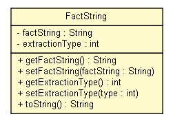

tud.iir.extraction.fact
Class FactString

java.lang.Object
 tud.iir.extraction.fact.FactString
tud.iir.extraction.fact.FactString
public class FactString
- extends java.lang.Object
The fact string is the string where the fact value is expected to be found in
this string can have been derived from different methods depending on where the attribute has been found
e.g. if in free text "The i8510 INNOV8 offers 16GB of built-in memory in addition to a microSD card slot for even more storage options"
or in a colon of a table "16GB internal, microSD card slot"
the distinction is important as the value extraction can differ for these types
|
Constructor Summary |
FactString(java.lang.String factString,
int extractionType)
|
| Methods inherited from class java.lang.Object |
clone, equals, finalize, getClass, hashCode, notify, notifyAll, wait, wait, wait |
factString
private java.lang.String factString
extractionType
private int extractionType
FactString
public FactString(java.lang.String factString,
int extractionType)
getFactString
public java.lang.String getFactString()
setFactString
public void setFactString(java.lang.String factString)
getExtractionType
public int getExtractionType()
setExtractionType
public void setExtractionType(int type)
toString
public java.lang.String toString()
- Overrides:
toString in class java.lang.Object